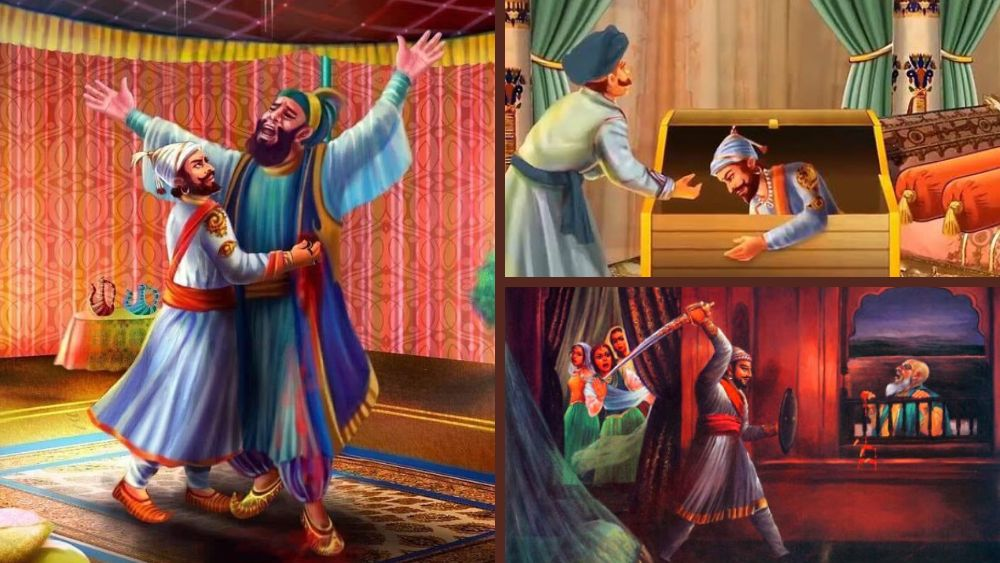
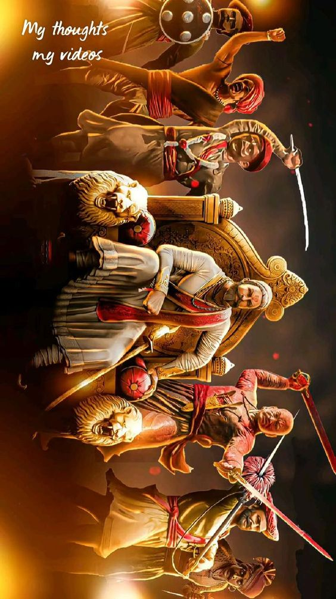

About Us
Honoring the Unsung Heroes: Let's Remember Those Who Fought Alongside Chhatrapati Shivaji Maharaj for Swarajya!
Exploring Chhatrapati Shivaji Maharaj's History: Get ready to discover the incredible story of Chhatrapati Shivaji Maharaj! Discover the inspiring tales and remarkable exploits of this iconic figure from Indian history. We're here to share fascinating insights and facts about this legendary historical figure.
छत्रपती शिवाजी महाराज हे मराठा साम्राज्याचे संस्थापक आणि एक महान योद्धा होते. त्यांचे जन्म १९ फेब्रुवारी १६७४ मध्ये शिवनेरीच्या रायगड किल्ल्यात झाले. त्यांचे नाव शिवाजी राय भोसले होते.
शिवाजी महाराजने मराठा साम्राज्य स्थापनेची शक्तीशाली विचारली आणि त्यांनी स्वतंत्र राज्य स्थापनेसाठी संघर्ष केला. त्यांनी स्वतंत्र भारताचे स्वप्न पूर्ण केले आणि त्यांचं शासनकाल १६७४ मध्ये समाप्त झालं. छत्रपती शिवाजी महाराज अत्यंत शौर्यशाली, योद्धाशील, आणि लोकप्रिय राजा होते ज्यांनी स्वतंत्रतेच्या मार्गावर मराठा साम्राज्य स्थापित केलं.
What Will You Learn
True History
We are committed to delivering authentic insights into Maratha history by harnessing the power of Animated videos and captivating storytelling. Our mission is to unravel the rich tapestry of Maratha heritage, ensuring that viewers not only receive accurate information but also engage with the narrative through visually compelling and immersive experiences.
Hidden Gems
These unsung heroes, the hidden gems of Chhatrapati Shivaji Maharaj's illustrious reign, were stalwart warriors whose valor and contributions have often been overshadowed by more widely recognized figures. Ibrahim Khan Gardi, with his exceptional military skills, stood resolute in the face of adversaries, particularly shining in the Battle of Pratapgad. Trimbak Rao Dabhade, a steadfast Maratha noble, played a crucial role in the early growth of the empire, both on the battlefield and in governance. Naik Nimbaji Naik, Moropant Trimbak Pingle, and Baji Prabhu Deshpande, distinct from his more renowned namesake, showcased unwavering dedication in various campaigns, contributing significantly to the Maratha cause. Kheloji Bhonsle, Ganoji Shirke, and Bahirji Naik, less known, were instrumental in the defense and expansion of Maratha territories. These hidden gems, often overlooked in historical narratives, were the backbone of Shivaji Maharaj's army, embodying courage, strategic brilliance, and unyielding loyalty, shaping the destiny of the Maratha Empire in ways that deserve acknowledgment in the annals of Indian history.
*--Demonstration--*
In the contemporary era, the vibrant and dynamic history of the Marathas is set to be imparted to the young generation through engaging and accessible video formats. Recognizing the evolving nature of education and the preferences of today's youth, we are committed to presenting the rich tapestry of Maratha history in a visually compelling and immersive manner. Through meticulously crafted animated videos and captivating storytelling, the valor, achievements, and cultural heritage of the Maratha Empire will come to life, offering an innovative and enjoyable learning experience.
NOTE: The video is just an example of how the learning will be done